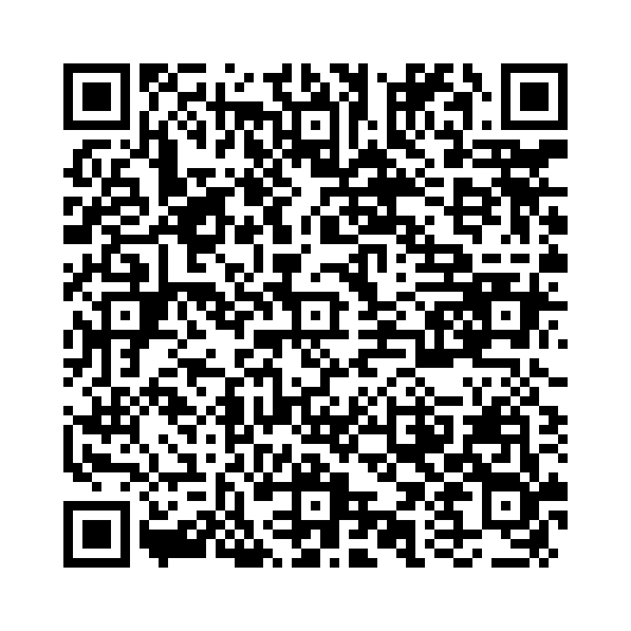

to不定詞の副詞的用法には目的、理由、条件、結果、程度を表す用法があります。例として以下が挙げられます：
以下の単語を並び替えて正しい文を作成しましょう。（和訳を参考にしてください）

問題1: (pass / study / I / the exam / to / hard) - 試験に合格するために一生懸命勉強します。
解答: I study hard to pass the exam.
解説: 「to + 動詞の原形」で目的を表します。
問題2: (be / up / great / he / to / grew / a musician) - 彼は成長して素晴らしい音楽家になりました。
解答: He grew up to be a great musician.
解説: 結果を表す「to + 動詞の原形」を用いた文です。
問題3: (last / my / year / I / to Tokyo / meet / friends / went / to) - 私は去年友達に会うために東京に行きました。
解答: I went to Tokyo to meet my friends last year.
解説: 目的を表す「to + 動詞の原形」を用いた文です。
問題4: (hear / the news / surprised / to / was / she) - 彼女はそのニュースを聞いて驚きました。
解答: She was surprised to hear the news.
解説: 理由を表す「to + 動詞の原形」を使用しています。
問題5: (thought / very / I'm / the / hear / to / fact / happy) - 私はその事実を聞いて大変うれしい。
解答: I'm very happy to hear the fact.
解説: 理由を表す「to + 動詞の原形」を使用しています。